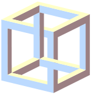

|
Una paradoja o antilogía es una idea extraña opuesta a lo que se considera verdadero a la opinión general También se considera paradoja a una proposición en apariencia falsa o que infringe el sentido común, pero no conlleva una contradicción lógica.La paradoja del mentiroso es un conjunto de paradojas relacionadas de modo que no es posible asignar un valor de verdad a la oración sin contradecirse. |
 |
Un hombre afirma que está mintiendo. ¿Lo que dice es verdadero o falso ?
“La oración posterior es cierta” y “La oración anterior es falsa”.